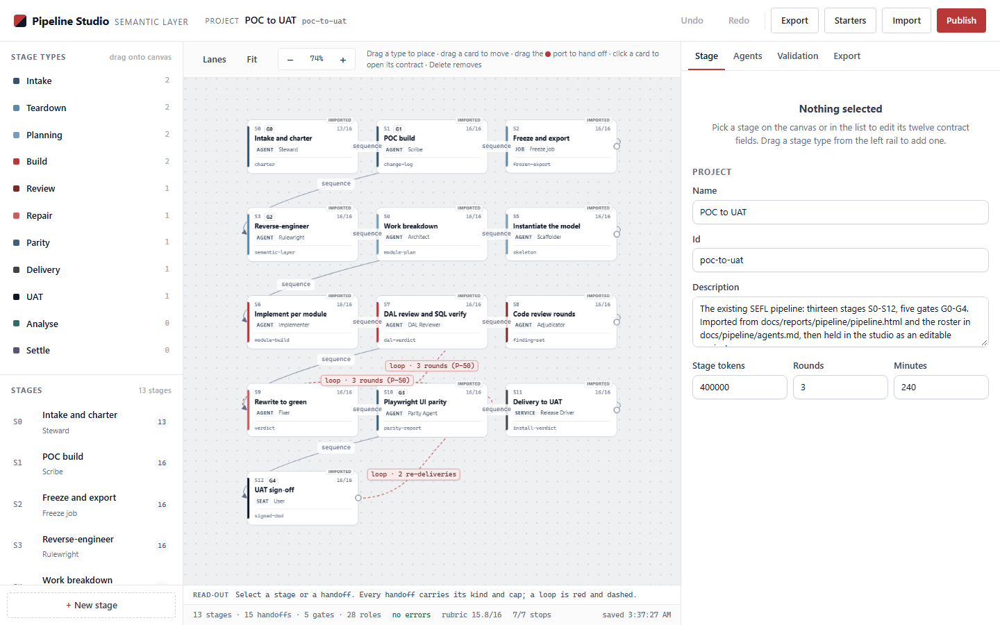
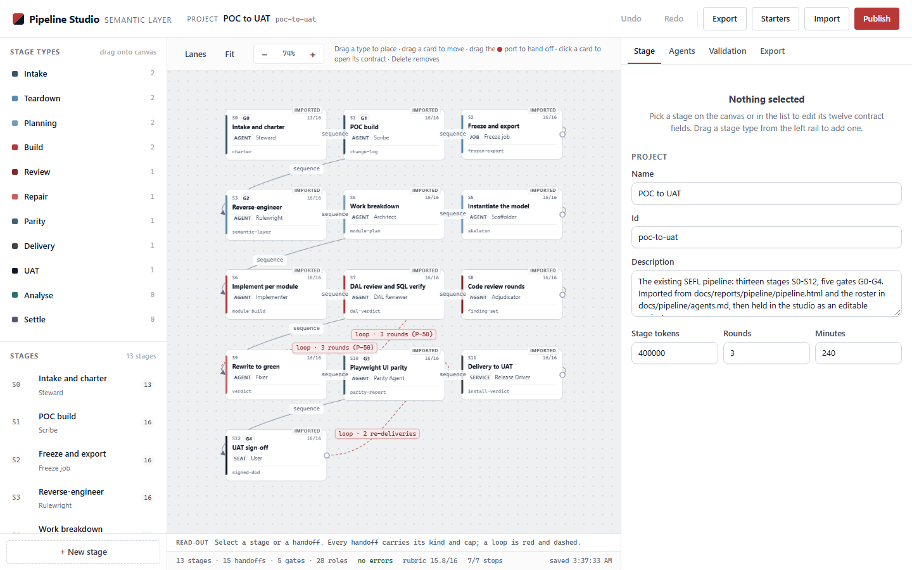

The driver landed on origin/main at 504f2cd (1.18.0). This is what it does when a
queue row is put on a real pipeline and left alone: nine stage runs, two crossings of a capped loop, real headless
Chromium in every stage, and a park that says why.
Real: Assistant.sweepQueues — the panel's own clock. It read the bundle, called
driveTaskPipelines and settleTasks, built the stage prompt, wrote the queue file once per pass
and journalled each write. The queue file, the driver, the settle and the journal are the panel's own code, not a
re-implementation.
A stand-in, named: the job store is the harness's own (lib/jobs.js is not loaded). It supplies the
three things the panel asks a store for — list, firstOfThread and makeWorktree —
and the harness injects one spawner. makeWorktree runs a real git worktree add -b
against the fixture repository, so the tree, the branch and the cut are real; the spawner launches the real worker
process.
Real: every stage's work — a separate node process per stage run, driving headless Chromium
against the Pipeline Studio copy in the tree and writing the artifact the stage declares.
A seat, not a model: there is no gateway, no token and no LLM. The worker is a scripted seat with a stated
remit; the job record it returns (thread, status, finalMessage) is what a
gateway would have returned. It is handed the prompt and its tree and nothing else, so the only way it knows which
stage it is in is the provenance line the driver put in that prompt.
Round A: 9 stage runs, 1 tree cut, 2 crossings of H-3 against a cap of 2, row parked at S3 with
pipeline-cap. Round B: identical in every routing fact. The nine stages held the row for 31s
(A) and 80s
(B) from the first entry to the last settle, with the browser workers accounting for 28s and
77s of that.
The bundle was written once, validated by the panel's own loader (parseBundle) before anything was
driven, and read by the assistant on every pass. Both rounds read the same bytes: the two sha256s
are equal.
| field | value |
|---|---|
| pipeline | probe-fix-loop — Probe, fix, verify — a capped repair loop |
| bundle file | <work>/round-A/pipeline-bundle.json |
| sha256 (round A) | 9589a3e69cf6d2a41d7eccc25d0e9a013eb06867db1dddaa98418109807413d0 |
| sha256 (round B) | 9589a3e69cf6d2a41d7eccc25d0e9a013eb06867db1dddaa98418109807413d0 |
| stages | S1 Probe the studio → out/probe.jsonS2 Fix what the probe found → out/fix.jsonS3 Verify the fix → out/verify.json |
| handoffs | H-1 S1 → S2 · sequenceH-2 S2 → S3 · sequenceH-3 S3 → S1 · loop · cap 2 rounds |
| gates | none — nothing can stop this pipeline but the cap |
Every row below is one sweepQueues() pass (11 passes). A live
pass found the row's thread still running and moved nothing — the driver reads the run's status, not a sentence, and a
live run has not settled. The pass after the worker exits is the one that advances the row.
| # | row state after the pass | stage | crossings | thread | the row's reason |
|---|---|---|---|---|---|
| 1 | queued | S1 · visit 1 | {} | — | |
| 2 | running | S1 · visit 1 | {} | a-01 live | |
| 3 | running | S2 · visit 1 | {"H-1":1} | a-02 live | |
| 4 | running | S3 · visit 1 | {"H-1":1,"H-2":1} | a-03 live | |
| 5 | running | S1 · visit 2 | {"H-1":1,"H-2":1,"H-3":1} | a-04 live | |
| 6 | running | S2 · visit 2 | {"H-1":2,"H-2":1,"H-3":1} | a-05 live | |
| 7 | running | S3 · visit 2 | {"H-1":2,"H-2":2,"H-3":1} | a-06 live | |
| 8 | running | S1 · visit 3 | {"H-1":2,"H-2":2,"H-3":2} | a-07 live | |
| 9 | running | S2 · visit 3 | {"H-1":3,"H-2":2,"H-3":2} | a-08 live | |
| 10 | running | S3 · visit 3 | {"H-1":3,"H-2":3,"H-3":2} | a-09 live | |
| 11 | parked | S3 · visit 3 | {"H-1":3,"H-2":3,"H-3":2} | a-09 | the loop H-3 (S3 → S1) is at its cap of 2 rounds — 2 crossings already taken, so the row s |
enteredAt is when the record entered the stage; settledAt is when its run was read as
done and the stage settled. Every entry's tree.path is the same directory as the row's
pipelineRun.tree.path — one cut, nine runs, no second tree.
| stage run | stage | thread | entered (UTC) | settled | held | artifact sha256 | in tree |
|---|---|---|---|---|---|---|---|
| probe-fix-loop/S1#1 | Probe the studio | a-01 | 08:37:23 | 08:37:28 | 4.2s | 511dd08d7c66df2a… | present |
| probe-fix-loop/S2#1 | Fix what the probe found | a-02 | 08:37:28 | 08:37:30 | 2.0s | 671d30422a98b024… | present |
| probe-fix-loop/S3#1 | Verify the fix | a-03 | 08:37:30 | 08:37:33 | 3.8s | 82281e4bada04e68… | present |
| probe-fix-loop/S1#2 | Probe the studio | a-04 | 08:37:33 | 08:37:37 | 3.5s | b62ba1ff0b897ef0… | present |
| probe-fix-loop/S2#2 | Fix what the probe found | a-05 | 08:37:37 | 08:37:39 | 2.5s | 4cc1a76bc15014c5… | present |
| probe-fix-loop/S3#2 | Verify the fix | a-06 | 08:37:39 | 08:37:44 | 4.9s | 38db2871d1598d01… | present |
| probe-fix-loop/S1#3 | Probe the studio | a-07 | 08:37:44 | 08:37:48 | 3.7s | b243e59a7446d3ed… | present |
| probe-fix-loop/S2#3 | Fix what the probe found | a-08 | 08:37:48 | 08:37:50 | 1.8s | 26e920e868ba87d9… | present |
| probe-fix-loop/S3#3 | Verify the fix | a-09 | 08:37:50 | 08:37:54 | 4.3s | 715720c237078061… | present |
Total wall clock from the first entry to the last settle: 30.7s. Threads are distinct per stage run: the driver starts a NEW worker for every visit, including the loop-backs.
The probe's contract is six clauses (the pipeline's own bar, quoted in the stage prompt). Visit 1 measured four passing and two failing; the fix stage applied the stylesheet patch the failures named; the verify stage re-measured and found both fixed with no regression. Visits 2 and 3 re-probed a studio that was already at the bar.
| visit | clause | key | verdict | what it measured |
|---|---|---|---|---|
| 1 | L1 | seed-rendered | pass | 13 cards S0..S12 |
| 1 | L2 | no-page-errors | pass | 0 page, 0 console |
| 1 | L3 | card-name | pass | 13/13 named |
| 1 | L4 | subtext-size | FAIL | min 10.5px over 26 lines |
| 1 | L5 | min-text | FAIL | node-imported 8px, node-gate 9px, node-kind 9px, node-artifact 9.5px |
| 1 | L6 | bundle-docs | pass | artifacts, pipeline, roles, yaml |
| 2 | L1 | seed-rendered | pass | 13 cards S0..S12 |
| 2 | L2 | no-page-errors | pass | 0 page, 0 console |
| 2 | L3 | card-name | pass | 13/13 named |
| 2 | L4 | subtext-size | pass | min 12px over 26 lines |
| 2 | L5 | min-text | pass | nothing below 10px |
| 2 | L6 | bundle-docs | pass | artifacts, pipeline, roles, yaml |
| 3 | L1 | seed-rendered | pass | 13 cards S0..S12 |
| 3 | L2 | no-page-errors | pass | 0 page, 0 console |
| 3 | L3 | card-name | pass | 13/13 named |
| 3 | L4 | subtext-size | pass | min 12px over 26 lines |
| 3 | L5 | min-text | pass | nothing below 10px |
| 3 | L6 | bundle-docs | pass | artifacts, pipeline, roles, yaml |
| clause | rule | change |
|---|---|---|
| L4 | .node-meta | role/meta line 10.5px -> 12px |
| L4 | .node-role | role name set to 12px explicitly |
| L5 | .node-imported | imported badge 8px -> 10px |
| L5 | .node-gate | gate badge 9px -> 10px |
| L5 | .node-kind | kind label 9px -> 10px |
| L5 | .node-artifact | artifact chip 9.5px -> 10px |
| visit 2: nothing applied — the probe found no failing clause, and the fix stage wrote an artifact saying so. | ||
Visit 1's fix.json records studio/app.css before
46504f9b5d228ec0… and after abfb4def0187c2b0….
Visit 1's verify.json says fixed: L4, L5, still open: none,
regressions: none.


The shots are the stages' own evidence, taken in the tree the stage ran in and copied here by the harness. The "saved …" clock in the studio's footer is the app's own, and is not part of any artifact.
H-3 is the only edge out of S3, so it is the edge the driver takes: S3 →
S1, kind loop, cap 2 rounds.
The driver counts crossings on the record and refuses the third.
| crossing | edge | after stage run | row written to | counting |
|---|---|---|---|---|
| 1 | H-3 | probe-fix-loop/S3#1 | S1 · visit 2 | allowed — 1 of 2 |
| 2 | H-3 | probe-fix-loop/S3#2 | S1 · visit 3 | allowed — 2 of 2 |
| 3 | H-3 | probe-fix-loop/S3#3 | — | refused — used 2, limit 2 |
The record kept the count: pipelineRun.crossings reads
{"H-1":3,"H-2":3,"H-3":2} at the park — the rail edges three times each, the loop twice. The
loop is not re-taken on a requeue: the count lives in the queue file, which is what makes a cap survive a panel
restart.
“the loop H-3 (S3 → S1) is at its cap of 2 rounds — 2 crossings already taken, so the row stops here for a decision”
The park is a manual hold: nothing the panel can test releases a cap. The driver wrote the decision on the stage
run (probe-fix-loop/S3#3) as a structured fact — code pipeline-cap, trigger
cap, the edge, the used count and the limit — and rendered the sentence once for the row, the journal and
the window. The release is the reader's: pipeline-release with release: "cap" resets that
edge's crossings to zero (a plain requeue would re-park on the next pass, because the test is
used + 1 > limit).
| decision | stage run | code | trigger | by |
|---|---|---|---|---|
| probe-fix-loop · S1 settled — the run finished | probe-fix-loop/S1#1 | — | stage-settled | panel |
| probe-fix-loop · S2 settled — the run finished | probe-fix-loop/S2#1 | — | stage-settled | panel |
| probe-fix-loop · S3 settled — the run finished | probe-fix-loop/S3#1 | — | stage-settled | panel |
| probe-fix-loop · S1 settled — the run finished | probe-fix-loop/S1#2 | — | stage-settled | panel |
| probe-fix-loop · S2 settled — the run finished | probe-fix-loop/S2#2 | — | stage-settled | panel |
| probe-fix-loop · S3 settled — the run finished | probe-fix-loop/S3#2 | — | stage-settled | panel |
| probe-fix-loop · S1 settled — the run finished | probe-fix-loop/S1#3 | — | stage-settled | panel |
| probe-fix-loop · S2 settled — the run finished | probe-fix-loop/S2#3 | — | stage-settled | panel |
| the loop H-3 (S3 → S1) is at its cap of 2 rounds — 2 crossings already taken, so the row stops here for a decision | probe-fix-loop/S3#3 | pipeline-cap | cap | panel |
The first sweep found a row with a project and no tree, so the driver asked for the cut (ensureTree); the
assistant cut it, wrote the path on the row, and journalled it. Every stage after that started on the
existing: true path in the same directory — including both loop-backs.
| fact | round A |
|---|---|
| cuts | 1 |
| branch | wtgui/probe-the-pipeline-studi-0cd7da |
| tree | <repo>/.worktrees/probe-the-pipeline-studi-0cd7da |
| cut from | 3cca959 |
| stage runs in that tree | 9 of 9 |
| tree at the park | HEAD 3cca959 · 2 uncommitted file(s) — the stages' artifacts, left where the work was |
A second process, a second fixture repository, a second queue file and a second Assistant. It was given nothing but the same bundle.
| stage run | stage | thread | entered (UTC) | settled | held | artifact sha256 | |
|---|---|---|---|---|---|---|---|
| probe-fix-loop/S1#1 | Probe the studio | b-01 | 08:37:56 | 08:38:00 | 3.6s | 511dd08d7c66df2a… | present |
| probe-fix-loop/S2#1 | Fix what the probe found | b-02 | 08:38:00 | 08:38:02 | 1.8s | 671d30422a98b024… | present |
| probe-fix-loop/S3#1 | Verify the fix | b-03 | 08:38:02 | 08:38:06 | 4.0s | 82281e4bada04e68… | present |
| probe-fix-loop/S1#2 | Probe the studio | b-04 | 08:38:06 | 08:38:10 | 4.8s | b62ba1ff0b897ef0… | present |
| probe-fix-loop/S2#2 | Fix what the probe found | b-05 | 08:38:10 | 08:38:14 | 3.2s | 4cc1a76bc15014c5… | present |
| probe-fix-loop/S3#2 | Verify the fix | b-06 | 08:38:14 | 08:38:18 | 4.7s | 38db2871d1598d01… | present |
| probe-fix-loop/S1#3 | Probe the studio | b-07 | 08:38:18 | 08:39:10 | 51.4s | b243e59a7446d3ed… | present |
| probe-fix-loop/S2#3 | Fix what the probe found | b-08 | 08:39:10 | 08:39:12 | 2.8s | 26e920e868ba87d9… | present |
| probe-fix-loop/S3#3 | Verify the fix | b-09 | 08:39:12 | 08:39:16 | 4.1s | 715720c237078061… | present |
Branch: wtgui/probe-the-pipeline-studi-aa52a9 · tree <repo>/.worktrees/probe-the-pipeline-studi-aa52a9 · cuts
1.
| claim | result | evidence |
|---|---|---|
| same stage sequence | yes | probe-fix-loop/S1#1 → probe-fix-loop/S2#1 → probe-fix-loop/S3#1 → probe-fix-loop/S1#2 → probe-fix-loop/S2#2 → probe-fix-loop/S3#2 → probe-fix-loop/S1#3 → probe-fix-loop/S2#3 → probe-fix-loop/S3#3 |
| same crossings | yes | {"H-1":3,"H-2":3,"H-3":2} |
| same end state and sentence | yes | parked |
| byte-identical artifacts per visit | yes | the artifacts carry no timestamp and no absolute path, so the same work produces the same bytes |
| one cut per round | yes | 1 cut in each round |
| every stage in the row's tree | yes | 9 of 9 in each round |
| a new worker per stage run | yes | no thread is reused across rounds, and none within one |
Three things the driver does that the design document does not say out loud. The first is a real defect in a sentence a person reads; the other two are consequences of the graph rules, and a reader should know them before choosing a pipeline shape.
On the first visit of the first stage, the prompt's inputs block names the handoff into S1 — the loop
H-3 — and reports verify · out/verify.json · not in the tree. Nothing has been handed on yet:
the row has never run S3. The sentence is literally true and reads as a missing input on the very first turn. The
driver decides "the edge the row arrived by" from pipelineRun.via or, failing that, the last handoff whose
to is this stage — so the loop into a pipeline's first stage is announced before its first crossing.
— Probe, fix, verify — a capped repair loop: stage 1 of 3, Probe the studio (probe-fix-loop/S1), visit 1
Queue task #1: probe the pipeline studio and fix what the probe finds
INPUTS
handed on verify out/verify.json not in the tree writer verify-seat
(S3 → S1, handoff H-3, loop — crossing 0 of a cap of 2)
tree <repo>/.worktrees/probe-the-pipeline-studi-0cd7da branch wtgui/probe-the-pipeline-studi-0cd7da
HEAD 3cca959 0 uncommitted files
one tree, three stages, one capped loop
After the fix, visit 2's probe found 0 failing clauses and wrote an artifact saying so. The driver still
crossed H-3 because S3's only edge out is the loop — the panel does not read the artifact's value, and
there is no sequence edge to take. So visits 2 and 3 re-probed a studio that was already at the bar, and the row
parked on the cap rather than on "the work is done". A pipeline that is expected to converge needs the convergence to
be expressible as a gate's decision record (a barrier the code cannot cross) or as a handoff kind the driver can
choose between — not as a loop with a cap.
By visit 2 the tree reads 2 uncommitted files — the probe's and the fix's artifacts. That is by design
(treeFactsOf measures, it never resets), and it is visible in the INPUTS block the next stage gets. It
does mean a pipeline whose stages write artifacts cannot end with a clean tree unless a stage commits them.
Two kinds of sentence share this page. An evidence sentence names a file a reader can open or a command they can run, and the round would be wrong if it changed. A commentary sentence is the tester's reading of those files; a reader may weigh it differently without the round being wrong.
| subject | evidence — open it, or re-run it | commentary — the tester's reading |
|---|---|---|
| the pipeline | the bundle's sha256 (9589a3e6…), read out of both rounds'
ledgers | that a three-stage capped loop is the shape worth demonstrating |
| the routing | the nine stage runs, their threads, the crossing counts and the park, as the ledgers record them | that "the same answer" twice is the interesting result, and that two rounds are enough |
| the work | the nine artifacts per round, their sha256s, and the screenshots the stages
took in the tree | that the probe's six clauses are the right six, and that the CSS edit is a good fix |
| the lifecycle | one cut per round, and each stage run's own tree facts in the ledger | that one tree is the right number for a three-stage pipeline |
| the three findings | the quoted INPUTS line, the visit-2 probe's zero failing clauses, the dirty count per visit | that the first is a "defect", that the second makes the loop shape wrong for a converging pipeline, and that the third matters |
The worker is a scripted seat, not a model: it takes the driver's prompt, drives a real browser, and writes a fixed artifact. So these files are evidence for the driver — its stage-run identity, its routing, its one-tree lifecycle and its decision record — and for nothing else. They say nothing about how a model would read the same prompt, whether a gateway would return that job record, or whether the CSS edit is the fix a reviewer would choose. The round proves the panel's mechanics; the quality of the work inside a stage is outside what this harness measures.
The harness was run again on this checkout, into a scratch directory, leaving the ledgers below untouched. Both
rounds finished at 08:46:41 UTC or earlier (the ledgers' own finishedAt:
08:46:11.960Z and 08:46:40.964Z). Each
round rebuilt its own fixture repository, so the fixture's seed commit differs (it was 3cca959 when
the ledgers below were written and 9d98d4a this time); the work did not. The bundle
sha256 was the same, the observed sequence was the same nine stage runs, the crossings were the same
(H-1 3, H-2 3, H-3 2), each round cut one tree, and all nine artifact
sha256s matched round A's: 40 ledger checks, 0 failed. The clocks differ — 30.7 s and 80.3 s
in the ledgers, 34.2 s and 26.7 s in the re-run, first entry to last settle — because the stages are real
processes and a real browser. The routing and the artifact bytes are the reproducible part; the wall-clock is not,
and no claim on this page rests on it.
The re-run's ledgers and artifacts were written outside the repository and are not committed; the check compared them field by field with the two ledgers this page links. The command in the last paragraph repeats it.